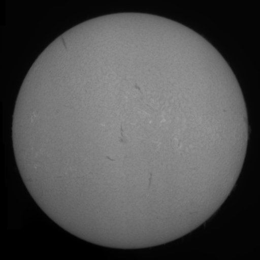
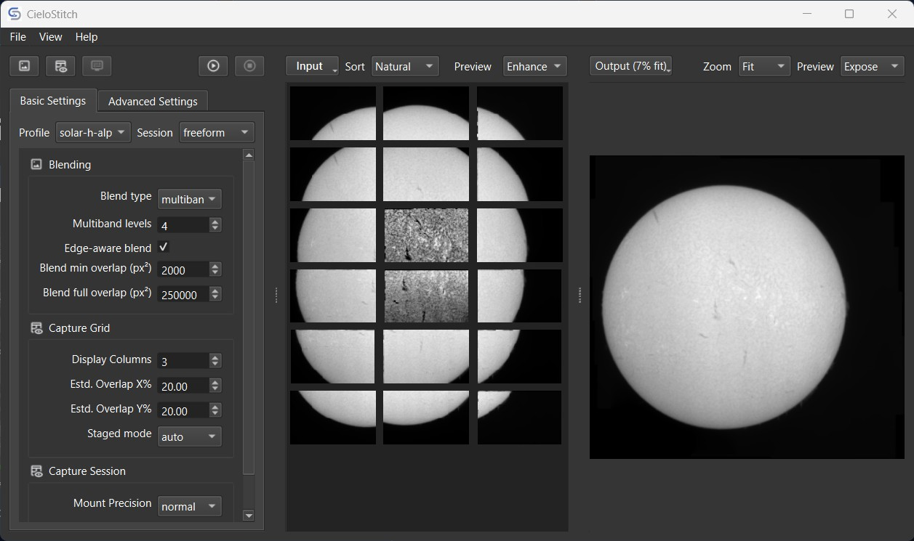

Solar and lunar mosaics
Subject-aware workflows tailored for solar surface detail, H-alpha imaging, and lunar panel capture.
High-performance imaging software
Open Source · Free to Use
Build precise solar, lunar, milky way, nightscape and landscape mosaics with a desktop workflow designed for high-resolution panel alignment, fast processing, and open-source flexibility.
Weave the heavens and the earth, frame by frame.

Features
Subject-aware workflows tailored for solar surface detail, H-alpha imaging, and lunar panel capture.
Robust panel matching uses image features to align overlapping captures with precision.
Assemble expansive mosaics while preserving fine structures across large stitched canvases.
Optimized matching and blending paths reduce turnaround time for large panel sets.
A modern desktop GUI provides an approachable workflow for interactive review and export.
The reusable core is MIT-licensed, making automation and direct integration straightforward.
Showcase

System requirements
Architecture
CieloStitch Core
The reusable stitching core powers feature detection, matching, warping, blending, and export workflows for scientific mosaics.
Explore the core repositoryCieloStitch App
The application layers a PySide desktop experience on top of the core engine for interactive configuration, previews, and release packaging.
See the current desktop releaseLatest build
Currently available on Windows platform only.
Release v0.5.00 is the latest desktop app build and core stitching engine.
Archive
Read release notes and download demo data directly from GitHub releases.
All release upto v0.5.00 are available on GitHub. You can also download a set of demo data to get yourself familiar with the process of stitching using CieloStitch.